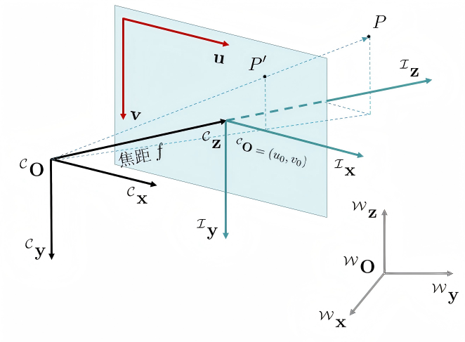
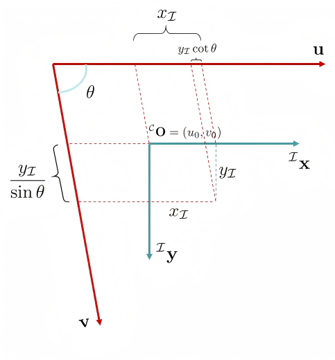

相机标定¶
网上资料很多：相机标定- OpenCV 官方文档，相机标定- OpenCV 使用教学 .
动机¶
三维重建（3D-Reconstruction）是计算机视觉的一个主要研究方向。“三维重建”指利用多张二维图片确定空间点的三维坐标。在此过程中，需要事先标定相机内/外参数。讲人话，给定三维空间中一个点，我们需要知道它在拍摄所得图片里的二维坐标。
成像过程的理论推导¶
定义世界坐标系 \(\mathcal{W}\) 、相机坐标系 \(\mathcal{C}\) 、图像坐标系 \(\mathcal{I}\) 和像素坐标系 \(\mathcal{P}\) . 相机坐标系以相机光心为原点 \({}^{\mathcal{C}}\mathbf{O}\) ，以相机正对方向为 \({}^{\mathcal{C}}\mathbf{z}\) 轴。图像坐标系 \(\mathcal{I}\) 原点为图像中心。相机光心到图像坐标系原点的距离为相机焦距 \(f\) .

考虑三维空间中一点 \(P\) ，其在世界坐标系下的坐标为 \({}^{\mathcal{W}}P=\begin{bmatrix}x_{\mathcal{W}}& y_{\mathcal{W}}& z_{\mathcal{W}}& 1\end{bmatrix}^{\top}\) . 则其到相机坐标系的齐次变换为：
其中，矩阵 \(\begin{bmatrix}{}^{\mathcal{C}}_{\mathcal{W}}R & {}^{\mathcal{C}}\mathbf{O}_{\mathcal{W}}\\ \mathbf{0} & 1\end{bmatrix}\) 可视为描述了相机在世界坐标系下的位姿，被称为相机的外参矩阵。接下来，根据投影的相似三角形关系，可以得到：
写成齐次坐标形式，有：
事实上，由于镜头光学特性，在投影过程中会出现畸变现象，例如桶形畸变、枕形畸变等。因此实际上有两个“图像坐标系”——理想图像坐标系（无畸变）和实际图像坐标系（有畸变），上文求的是投影点在理想图像坐标系下的坐标。由于畸变现象比较复杂，本文暂不考虑畸变。
径向畸变：
切向畸变：
我们接下来考虑图像坐标系 \(\mathcal{I}\) 到像素坐标系 \(\mathcal{P}\) 的转换关系。

如上图所示，像素轴不一定是标准正交的。（虽然现代图像传感器中 \(\theta\) 几乎为直角。）设一个像素在图像坐标系下的尺寸是 \(dx\times dy\) ，则有映射关系：
写成矩阵形式：
考虑到像素坐标系是整数坐标而图像坐标系是实数坐标，上式右半部分实际上还有一步取整。
综上所述，有
其中，矩阵 \(\begin{bmatrix}\dfrac{f}{dx} & -\dfrac{f\cot\theta}{dx} & u_0\\0 & \dfrac{f}{dy\sin\theta} & v_0\\ 0 & 0 & 1 \end{bmatrix}\) 被称为内参矩阵 ，默认 \(\theta\approx \pi/2\) 的情况下，该矩阵一般写成 \(\begin{bmatrix}f_x & 0 & u_0\\0 & f_y & v_0\\ 0 & 0 & 1 \end{bmatrix}\) ，其中 \(f_x = \dfrac{f}{dx}, f_y = \dfrac{f}{dy}\) .
张正友标定法¶
张正友标定法：用相机拍摄一张平面黑白棋盘格（标定板）的多角度图像，求解相机内参。
观察上文推导得到的忽略畸变的成像模型：
我们选取恰当的世界坐标系，使得标定板平面与 \(z_{\mathcal{W}} = 0\) 平面重合，则有：
其中 \(r_1\ ,\ r_2\) 分别代表旋转矩阵 \({}^{\mathcal{C}}_{\mathcal{W}}R\) 的第一列和第二列。定义单应矩阵 ：
记内参矩阵为 \(K\) ，则有
考虑旋转矩阵的两个约束 \(r_1^{\top}r_2 = 0\) 和 \(\left\|r_1\right\| = \left\|r_2\right\|\) ，有
也就是说，一个“3维真实点-2维像素点”点对能够提供关于内参矩阵 \(K\) 的两个约束。由于 \(K\) 一共有 5 个自由变量，所以理论上根据大于等于 3 个点对，就能求解出内参矩阵。
OpenCV 编程实现¶
OpenCV 的 calibrateCamera 函数原理：
- （张正友标定法）以平面棋盘格为x-y平面建立世界坐标系，利用世界平面点与图像点的匹配关系，估计单应矩阵，一张图片的单应矩阵能提供关于内参矩阵的两个约束，利用多张图片可进一步求出内参矩阵初值；
- 从内参和单应矩阵，求出每张图片外参的初值；
- 将相机内参、畸变系数、每张图片的外参进行联合优化，目标是所有点的重投影误差平方和最小。
import cv2
import numpy as np
import glob
import os
checkerboard = (6,8) # 棋盘内角点数量 1 行 6 个，1 列 8 个
square_side_length = 0.03 # 棋盘格子边长，单位：米
objpoints = [] # 棋盘内角点的三维坐标
imgpoints = [] # 棋盘内角点的二维坐标
objp = np.zeros((1, checkerboard[0] * checkerboard[1], 3), np.float32) # 尺寸 (1, 6*8, 3)
objp[0,:,:2] = np.mgrid[0:checkerboard[0], 0:checkerboard[1]].T.reshape(-1, 2)
objp *= square_side_length # 将坐标乘以格子边长，得到实际尺寸
images = glob.glob('./Calibration board image/*.ppm') # 读取所有标定图像文件
criteria = (cv2.TERM_CRITERIA_EPS + cv2.TERM_CRITERIA_MAX_ITER, 30, 0.001) # 亚像素角点精确化终止条件（迭代30次或精度0.001）
for fname in images:
img = cv2.imread(fname)
gray = cv2.cvtColor(img, cv2.COLOR_BGR2GRAY) # 转为灰度图
ret, corners = cv2.findChessboardCorners(gray, checkerboard, cv2.CALIB_CB_ADAPTIVE_THRESH + cv2.CALIB_CB_NORMALIZE_IMAGE)
if ret == True:
objpoints.append(objp)
# 亚像素角点精确化
corners2 = cv2.cornerSubPix(gray, corners, (11,11), (-1,-1), criteria)
imgpoints.append(corners2)
img = cv2.drawChessboardCorners(img, checkerboard, corners2, ret)
basename = os.path.splitext(os.path.basename(fname))[0]
outname = 'corners_' + basename + '.png'
cv2.imwrite(os.path.join('./Calibration board image/', outname), img)
cv2.imshow('img',img)
cv2.waitKey(0)
cv2.destroyAllWindows()
ret, mtx, dist, rvecs, tvecs = cv2.calibrateCamera(objpoints, imgpoints, gray.shape[::-1], None, None)
print("Camera matrix : \n")
print(mtx)
print("dist : \n")
print(dist)
print("rvecs : \n")
print(rvecs)
print("tvecs : \n")
print(tvecs)